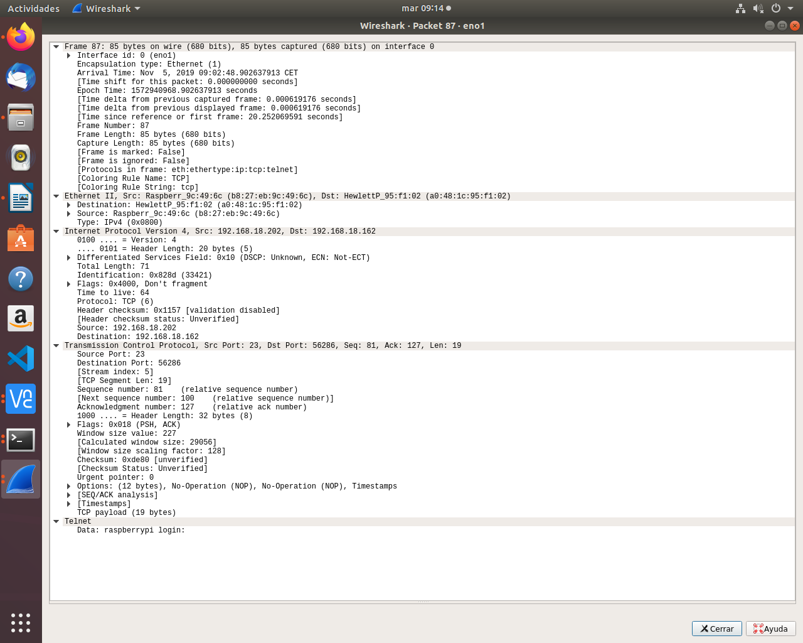
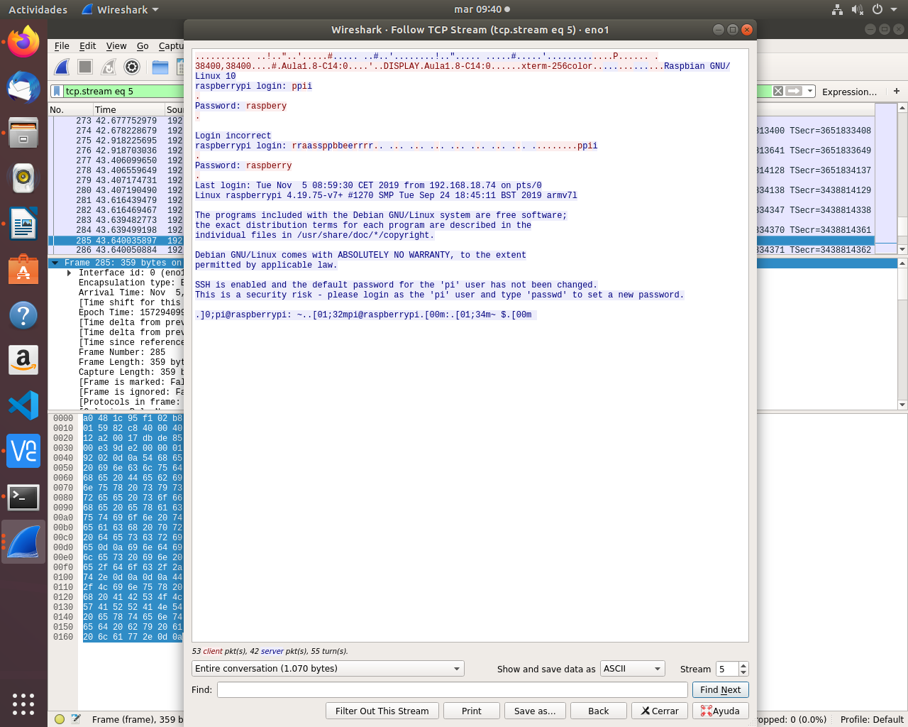
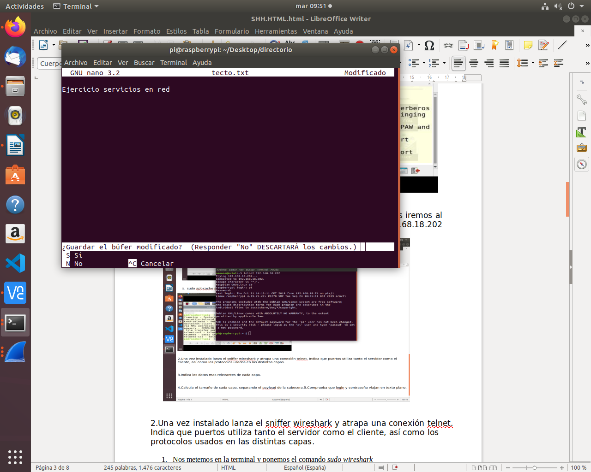
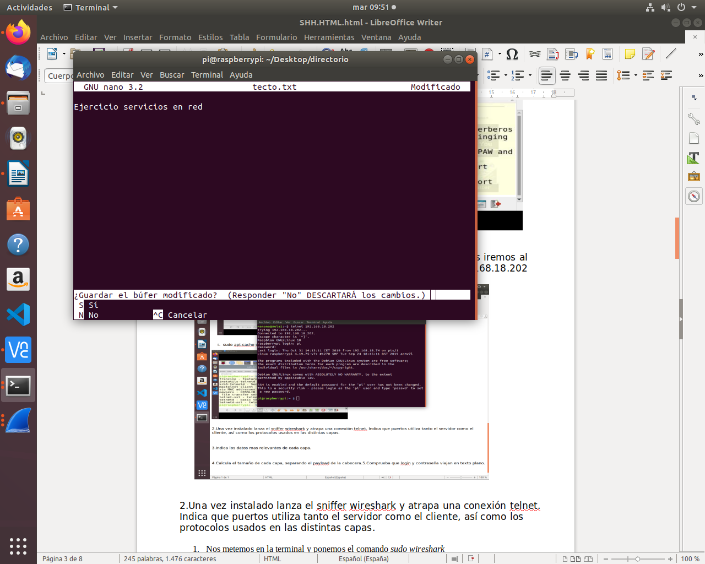

Seguidamente el comando “sudo apt install telnetd” para instalar el telnetd.


Ejercicio 1
1- Busca información en Internet de como montar un servidor telnet, bien en Windows o bien en GNU/Linux.
Seguidamente el comando “sudo apt install telnetd” para instalar el telnetd.
2- Una vez instalado lanza el sniffer wireshark y atrapa una conexion telnet. Indica que puertos utiliza tanto el servidor como el cliente, así como los protocolos usados en las distintas capas.


3- Indica los datos mas relevantes de cada capa.
4- Calcula el tamaño de cada capa, separando el payload de la cabecera.

5- Comprueba que login y contraseña viajan en texto plano.
6- Crea en el equipo remoto un directorio, un archivo de texto y posteriormente borralos.
 

Ejercicio 2
1- Instala un servidor SSH en tu sistema GNU/Linux y comprueba que el puerto 22 esta en escucha.


2- Crea dos usuarios denominados usuario1 y usuario2, que vas a usarlos en el ejercicio.


3- Comprueba que puedes acceder mediante ssh a esos usuarios.
4- Cambia el puerto del servidor e intenta a acceder de nuevo.


5- Cambia la configuración del servidor para que puedas acceder al sistema con usuario1 y NO con usuario2.

6- Cambia la configuración del servidor para que solo pueda acceder desde una IP determinada.


7- Captura con wireshark una conexión ssh, comprueba que login y contraseña van encriptada. Analiza cada una de las capas TCP/IP implicadas indicando los datos mas relevantes, además del tamaño de cada capa, separando datos y cabecera.